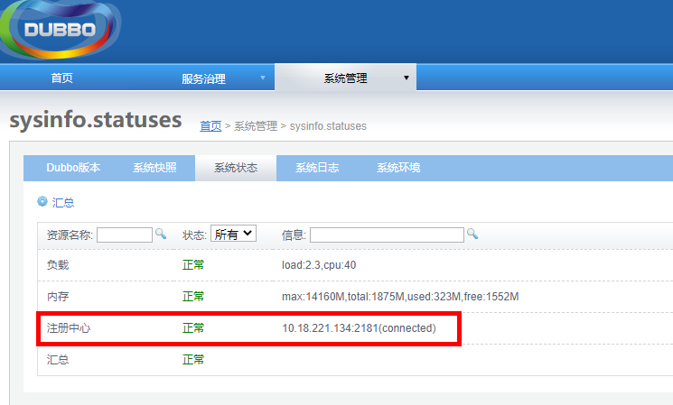

1.2.3.1. 安装zookeeper
Zookeer主要为各子系统和平台运行提供一致性协调服务。系统间的后台间接口的调用使用的就是zookeeper。解压缩zookeeper服务器压缩包（如zookeeper-3.4.6.tar.gz）到相应安装目录。
1.2.3.1.1. 修改配置文件
修改zookeeper-3.4.6/conf/zoo.cfg文件
#数据目录，如：/usr/zookeeper
dataDir=/usr/zookeeper
#连接端口如:2181,为后期各package配置使用
clientPort=2181
1.2.3.1.2. 启动zookeeper
在zookeeper目录下，执行以下命令
sh bin/zkServer.sh start
1.2.3.1.3. 验证
可在dubbo启动后，查看zookeeper的启动状态。如下图
